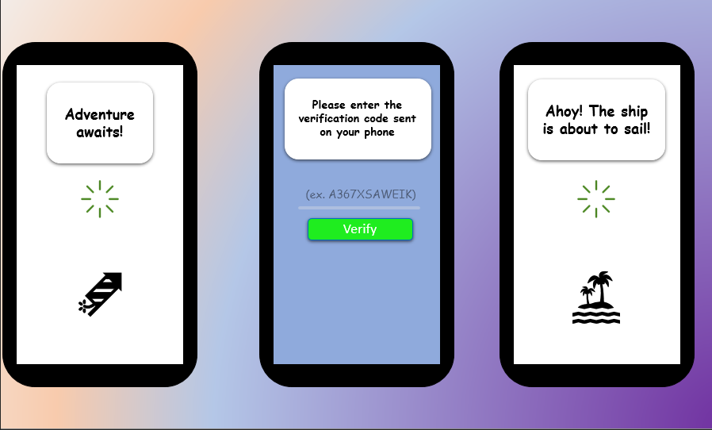
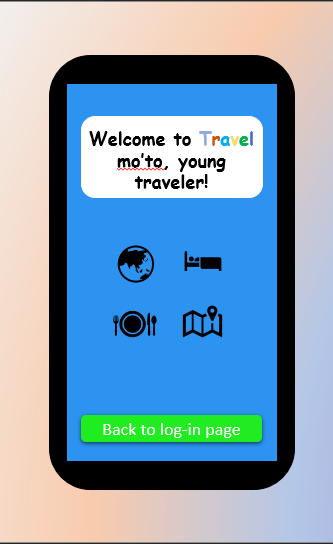
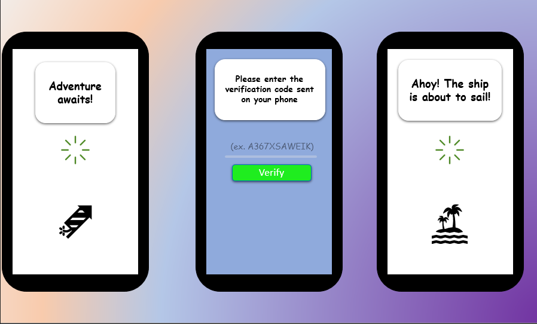
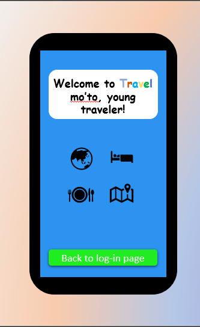

John Ace Asia
As I woke up this morning, I was trembled on my dream where my father is shouting at me and said "Magsaing kana!" -- luckily, there was. It's also my pleasure to meet you. I came where corrupt administration reigns and biased -- poor public service occurs, welcome to Pasay City! Well, I wished I can tell you some of my adventures, but unfortunately there are mine to keep. Don't worry, I still have another category to speak about. In my freshmen year, I joined different organization where I was unexpectedly nominated as a executive board member. They kept and trained me on how to speak and debate appropriately. I'm using it for my further cost on my daily living, especially on my studies which is a fundamental skill to have -- on the modern society, at least. A memorable event occurred when I compete on a debate inter-varsity as a member of this organization which is a hard task to do. But, despite of all circumstances I was able to fight and learn as much as possible that I can use on my further exploration in this society. Moving forward, there are many things that are surprising for each person and I'll gladly tell you mine. One of those is being open-minded when most people are not. Regardless of my religion and family orientation, I keep my own perspective and opinion about life and how to deal with it. Because at first, it is not their life to live. but it's mine -- alone. Surely, they can guarantee to give me guidance that I would need, but the decisions that I would chose is not theirs to make. To end this speech, I'm expecting that our professor would guide us on the fountain of knowledge where information, skills, etc. waits ahead to be drink or sip by her students because learning isn't the professor`s task to do.
Activity2
Activity2
Honestly speaking, I don`t have any favorite application. But, I think it would be similar to “what app caught your interest?” and my answer would be, Google Earth. Knowing that it is expensive to go on a journey, fear not, this application got you covered from different places, tourist spots, as well as other information that can help on your exploration. Aside from that, it also contains details about the location, its distance between you and your destination which is a fundamental thing to have as a traveler. Two months ago, when I installed this application, it’s been my basic source for discovering places where I haven`t visited yet and immerge myself into things that I wanted to see, virtually. Everything in here is essential, from its information regards to real time updates about the current status quo of the place, current events, and tourist destination. We, as a middle-class individual, will surely benefit from this free application given its features and friendly user interface.
Activity3
Elevator
That's how you design, boy.
Activity4
Problem: In the current status quo of our society, people have the capability to think of travelling on places they haven`t visited yet. They are enticed with the beautiful views of nature along with its different activities and events to begin with. People are always looking forward on creating unforgettable moments, experiences and memories with or without their love ones. Searching different places for possible vacation would be easy due to today`s technology but, the problem begins when there are varieties of information on the internet and people are confused because when these are compared on each other it produces unmatched result. Needs: • A travel guide that contains information about different tourist’s spot, restaurant, do’s and don’ts, etiquettes, and basic language of a certain country. • Gathered precise information as a guidance on travelling to different places.
Activity5
 



Reflection1
Within the past week, I was able to maintain my progress in terms of my capability to think an immediate response/answer/solution towards the task given in this class. Learning wise, the atmosphere given by the professor in her class is definitely interactive unto its students’ – which is a good thing. If we can continue to improve these things, I can assure that USERDES will be able to furtherly enhance my thinking capability to exert interesting design and solution for the modern world. To conclude, I always knew that there are rooms for improvement – everything starts on little steps, and this is one of them.
Reflection2
Reflection2
Within the past week, we’ve discussed about the importance and the potential threat of not having a specific goal for your project. This would lead you unto unknown path which you can no longer find your way to progress and time was wasted. Due to these circumstances, we, as a team, can clearly state that the lack of visualization, characterization, and information leads to a failed project. But, hang on, we've also prevented and took precautions to avoid any unnecessary mistakes as we thoroughly progress and critically think about our next steps, goals perhaps. I’ve gathered different ideas from other groups such as, who will be our target market, what lacks on the application, can you still cope-up on the demand of its service, etc. which will be a great catalyst for us to furtherly understand our problem and stand with our conviction. Knowing that there is no perfect application cease to exist, we will keep on providing features and updates that will cover the want/s or need/s of the society by continuously consolidating on our target market as well as seeking help to those who are already professional in this particular matter. As an I.T student, who’s looking forward to acquire more knowledge, skills, and solutions for the benefit of the society, I must say that we can not answer a question if we do not know the problem and that is why, it is important to explore the societies need/s or want/s or even predict the technology beyond our comprehension. Because we are humans, and we have unlimited time to progress and exceed the worlds’ limitation. That being said, I shall comply to the requirements of the professor and continue to inspire my colleagues as well as our predecessors.
Reflection3
Reflection3
In this particular period, I've learned that there are other ways that we can upload our file and create a storage where both end-user and creator can communicate with. It’s easy to say that a form of communication can be brought up to different medium within the technological advancement where people can update it anytime with a simple push and commit button. In addition, you can clearly navigate the whereabouts of your file on this particular storage called “repository” which significantly helped students to maintain a stable connection with their respective professor. Not only that we can use github for this matter, but heroku as well which mainly focuses on linking the mainstream file coming from github on its own server by linking in. Both web application provided the “security” for any threat/s coming from different malware, ransomware, viruses, etc. that greatly affect the file of the end-user to its recipient. I don’t have to elaborate more than what I needed to due to the fact that this is what I’ve learned for this week.